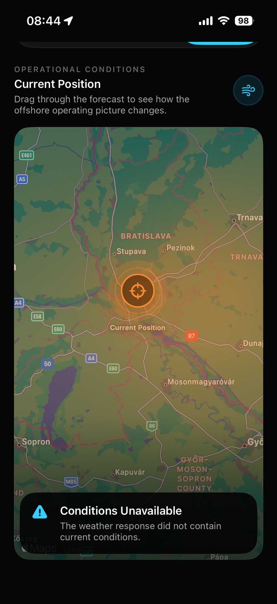
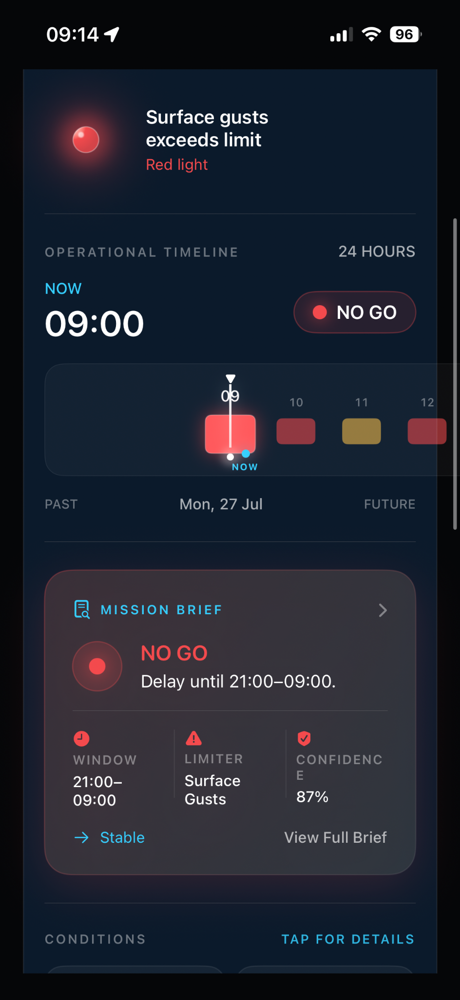
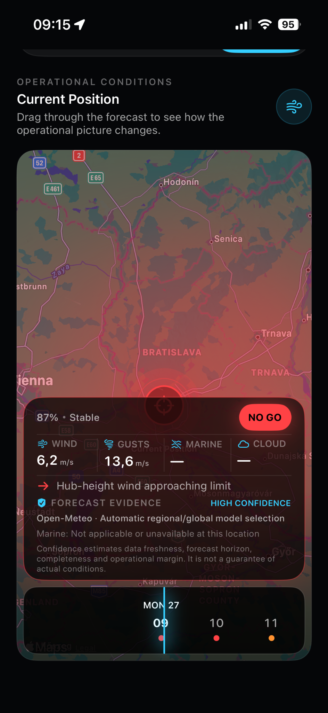

Flight Mode
A focused operational timeline with the current mission state, confidence, limiters and the next viable window.
Operational decision intelligence that turns marine weather, mission limits and solar geometry into a clear answer before the aircraft leaves the deck.
Every screen answers the operational question that matters: can this mission be conducted safely and effectively?
A focused operational timeline with the current mission state, confidence, limiters and the next viable window.
Map-first mission selection and a fourteen-day outlook across offshore farms, platforms and custom locations.
Wind and waves evolve together through time, making changing offshore conditions instantly understandable.
Solar position, glare, shadow geometry and nacelle-heading guidance for consistent inspection imagery.
A professional package containing decision evidence, recommendations, operational notes and PDF export.
Forecasts are evaluated against the aircraft, vessel and mission profile—not generic weather labels.
Plan the mission, understand the operational window, inspect the evidence and export a clear briefing without jumping between disconnected tools.



Conditions support the selected inspection profile. Wind and sea state remain within configured limits.
Offshore Fly identifies the decision, explains the limiting factors and shows what changes next. No artificial certainty. No fabricated marine data. No weather-dashboard noise.
Built offshore, for the moment when a forecast must become a decision.
Professional Access unlocks the complete mission workflow. The App Store displays the local subscription price securely for each region.
Monthly auto-renewable access. Cancel any time through your Apple Account.
Eligible users can evaluate Professional Access in the app before choosing a subscription.
Offshore Fly is a decision-support platform. The pilot in command remains responsible for the final operational decision, approved sources and regulatory compliance.